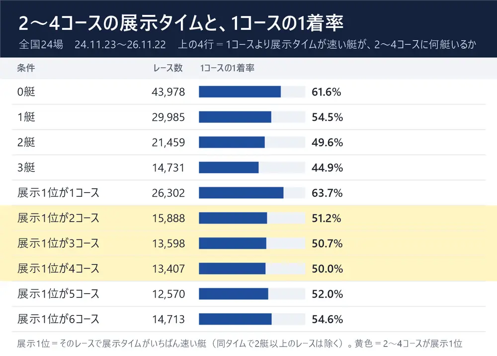
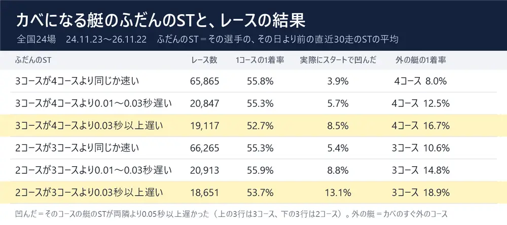
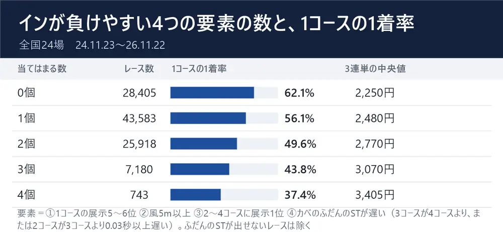

イン逃げの判断 インが負ける4つのパターン
ボートレースは、基本的にインが強い競技です。全国24場・2年分のレース結果（110,153レース）では、1コースの1着率は55.1%あります。
そのため、ほとんどのレースでは1号艇から舟券が売れ、インが負けたときは配当が高くなります。3連単の配当の中央値は、1コースが1着のレースで1,450円、1コースが負けたレースでは5,810円で、4倍ほどの開きがあります。
インが勝ちそうか、負けそうかを見極める要素を持っておくと、「このインは怪しいのに売れすぎている」「外が売れているが、この条件なら逃げる」といった判断ができるようになります。逃げを嫌う場面と、逃げに妙味がある場面の両方で役に立ちます。
このコラムでは、インが負けやすくなる4つのパターンを理屈から説明し、それぞれをレースのデータで確かめます。なお、番組の組み方や条件はレースごとに違うため、当てはまれば必ずインが負けるというものではありません。インが負ける可能性が上がる条件、として読んでください。
① インのモーターが劣勢
インのモーターの力が弱いときです。
力の弱いモーターは、スタートラインまでにスピードが乗らないため、外の艇に捲られやすくなります。とくにインは助走の短いところからスタートするため、モーターに力がないとスタートも遅れやすくなります。良いスタートが切れなければ、逃げは怪しくなります。
インの選手も、先に回れば有利なことは分かっているので、無理にでも先に回ろうとします。しかし、捲られまいと急いで握ると、ターンが窮屈になって出口で流れ、今度は簡単に差されてしまいます。いくらイン有利とはいっても、モーターが悪ければ不利は避けられません。
モーターの力そのものは数字で取れないため、ここでは展示タイムの順位を足の目安にして、1コースの1着率を比べました。
1コースの艇の展示タイムがそのレースの1〜2位なら、1着率は60.2%です。3〜4位で51.9%、5〜6位では45.5%まで下がります。
級別で分けても、同じ傾向がはっきり出ます。A1級の選手でも、展示タイムが5〜6位だと1着率は62.7%で、1〜2位のとき（74.1%）より11ポイント以上低くなります。B1級では、展示5〜6位で32.4%です。
級別の高い選手でも、足が劣勢なら逃げの信頼度は下がります。級別だけで1号艇を信用せず、足の比較まで見ることが大切です。
② 気象条件
風の向きや強さなどの自然条件です。一般に「向かい風はアウト有利、追い風はスロー有利」と言われます。
向かい風のときは、モーターに力がなければ、助走の短いインはとくにスタートが届きにくくなります。ほかの艇も含めてスタートがばらつきやすいため、外から伸びて攻めてくる艇も出てきます。前付けで進入が深くなれば、助走距離はさらに短くなります。力のないモーターでは向かい風に負けて全速でスタートに行けず、伸びのある外の艇がいれば捲られることになります。
追い風のときは、風に押されて最高速に達するまでの時間が短くなるため、向かい風にくらべてスタートは揃いやすくなります。モーターに力がなくても、風の後押しでスタートを保たせられるという利点があります。
一方で、追い風で握りすぎるとターンが押されて出口で流れ、差されやすくなります。かといって、流れないように早く落としすぎると、落としたところを包むように捲られることもあります。どちらになるかは選手によりますが、風の向きと強さがレースにどう影響するかは、イン逃げの判断でもある程度考えておく必要があります。
データでは、1コースの1着率は風2m以下で57.4%、3〜4mで54.4%、5m以上で49.7%です。風5m以上のときに1コースの艇の展示タイムが5〜6位だと、1着率は41.4%（3,498レース）まで下がります。①と②が重なると、インの信頼度は大きく下がります。
風の向きと強さによる違いは、コラム「追い風と向かい風」で詳しく説明しています。
③ 2〜4コースのモーターの仕上がり
2〜4コースの選手のモーターが良いと、イン逃げは難しくなります。
純粋な足の比べ合いで負ければ、そのまま捲られます。また、インの選手は2コースや3コースの艇が内をのぞいてくるのが見えると警戒し、窮屈な位置から握りすぎてターンが流れ、そこを差されることも多くなります。インの選手の腕が良ければ、多少の足負けはさばいてきますが、そうでなければ、外の艇の仕上がりは大きな脅威になります。
5コースと6コースも、仕上がっていれば勝負になることはあります。しかし、クリアしなければならない条件が多く、ほとんどの場合は内側の艇の動き次第です。インを直接脅かせるのは、基本的には2〜4コースです。展開の起点になれる艇が2〜4コースにいるかどうかで、イン逃げの成否は変わります。

1コースより展示タイムが速い艇が2〜4コースに1艇もいなければ、1コースの1着率は61.6%です。1艇なら54.5%、2艇なら49.6%、3艇とも速ければ44.9%まで下がります。
展示タイムがいちばん速い艇がどのコースにいるかで見ても、2〜4コースのときの1コースの1着率は50.0〜51.2%です。5コースなら52.0%、6コースなら54.6%で、同じ「展示1位」でも、インを直接脅かすのは2〜4コースの艇だということが数字にも出ています。
負け方も、展示1位の艇のコースで変わります。展示1位が3コースのレースでは3コースのまくりが9.0%、4コースのレースでは4コースのまくりが10.3%で、どちらも全体（3コースのまくり5.2%、4コースのまくり4.9%）の倍前後の割合です。
④ カベの有無
- と反対に、2コースや3コースにモーターが劣る艇や、スタートで遅れる艇がいる場合も、インが負ける確率は上がります。つまり、「カベ」があるかどうかです。
カベには、主に次の2つがあります。
- 3コースの攻めを受け止める、2コースのカベ
- カドの4コースの攻めを止める、カド受けの3コース
インのモーターが良くても、カベになる2コースや3コースがスタートで凹むと、その外の艇は余裕のある位置から角度をつけ、スピードに乗った旋回ができます。インにとっては大きな脅威です。
たとえば、2コースと3コースがスタートで遅れて中凹みの隊形になり、1コースと4コースが前に出て直接対決になるような場合です。カベがなければ、外から角度をつけて攻められるため、インが1艇でこれを受け止めるのは簡単ではありません。攻めてきた艇を張って止めても、その攻めに付いてきた5コースに差されることもあります。
逆に、スタート後の隊形がある程度揃い、カベが正常に機能するレースでは、イン逃げの信頼度は上がります。
まず、実際のスタートの結果で見ると、3コースが両隣より0.05秒以上遅れた（凹んだ）レースでは、1コースの1着率は46.3%（5,219レース）でした。凹みのないレースの56.2%より10ポイント低く、4コースのまくりで決まるレースが13.5%あります。2コースと3コースがそろって凹んだ中凹みのレースでは1コースの1着率が50.3%（2,547レース）で、4コースのまくりが16.2%です。
ただし、スタートの結果はレースが終わるまで分かりません。そこで、レース前に分かる材料として、カベになる選手の「ふだんのST」（その日より前の直近30走のSTの平均）を比べました。

カド受けの3コースの選手が、ふだんのSTで4コースの選手より0.03秒以上遅いレースでは、3コースが実際に凹んだのは8.5%で、遅くない場合（3.9%）の倍以上です。4コースの艇の1着率は16.7%で、こちらも倍以上になります（遅くない場合は8.0%）。2コースの選手が3コースより0.03秒以上遅いレースでも、3コースの艇の1着率は18.9%に上がります（遅くない場合は10.6%）。
一方で、1コースの1着率の下がり方は1.5〜3ポイントほどにとどまります。カベの弱さは、インが負けるかどうか以上に、「インが負けたときに誰が勝つか」を大きく変える要素だと言えます。カベが遅い場面では、インを頭から外すより、すぐ外の艇を相手の筆頭に置く使い方のほうが合っています。
なお、展示タイムで2コースや3コースが遅いことは、インの成績を下げる材料にはなっていませんでした。カベの強さは、展示タイムよりも、選手のスタートの力で見るほうが表れやすいようです。
4つの要素を重ねて見る
ここまでの4つの要素のうち、レース前に分かるものを1つずつ数え、当てはまる数ごとに1コースの1着率と配当を見ました。
- ① 1コースの艇の展示タイムが5〜6位
- ② 風が5m以上
- ③ 展示タイムがいちばん速い艇が2〜4コースにいる
- ④ カベの選手のふだんのSTが遅い（3コースが4コースより、または2コースが3コースより0.03秒以上遅い）

どの要素にも当てはまらないレースでは、1コースの1着率は62.1%（28,405レース）です。1つで56.1%、2つで49.6%、3つで43.8%、4つ全部では37.4%（743レース）まで下がります。3連単の配当の中央値も、0個の2,250円から、4個では3,405円まで上がります。
要素が重なるほどインは負けやすくなり、配当も上がります。1号艇が売れているレースでも、2つ以上当てはまるなら、逃げを疑う価値があります。反対に、1つも当てはまらないレースで外の艇が売れているなら、逃げに妙味があると考えられます。
まとめ
選手の特徴や場の形など細かい要素はほかにもありますが、インが負けるパターンは、大きく分けると次の4つです。
- インのモーターが劣勢
- 気象条件
- 2〜4コースのモーターの仕上がり
- カベの有無
1つだけで判断せず、いくつ重なっているかで、イン逃げの信頼度を考えることが大切です。
数字は、全国24場の2024年11月23日〜2026年11月22日のレース結果から出しました。展示タイムの順位は、同じレースの6艇の中での速い順です。展示タイムは足の目安で、モーターの力そのものではありません。